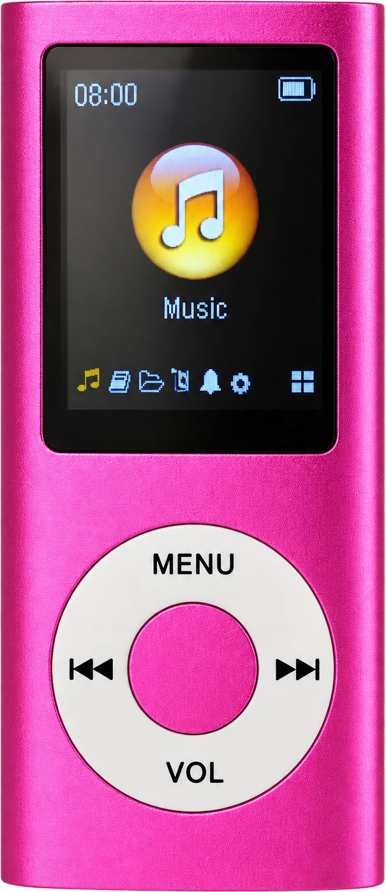

iPod

Timeline
— Apple released the first iPod, promising a thousand songs in your pocket.
— The iPod mini arrived in bright aluminum colors and became a fashion accessory.
— The iPod nano and iPod shuffle made MP3 players smaller, cheaper, and everywhere.
— Apple discontinued the iPod touch, officially ending the iPod line after 21 years.
The iPod was a portable MP3 player that stored an entire music library on one small device. Its click wheel, colorful bodies, and white wired earphones turned listening to music into something people could see from across the street.
Smartphones absorbed the iPod's job, and streaming replaced the idea of owning songs. Now dedicated music players are coming back among people who want to listen without notifications, algorithms, or a screen pulling their attention — the same impulse that brings people back to the cassette tape and the CD player.